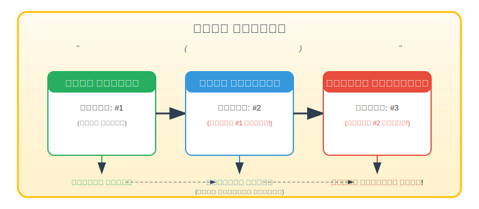
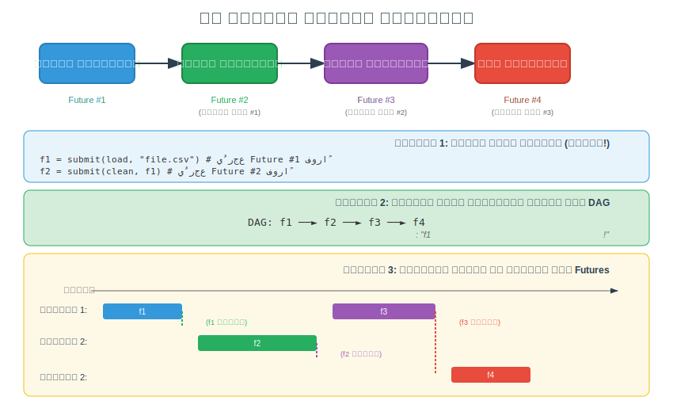
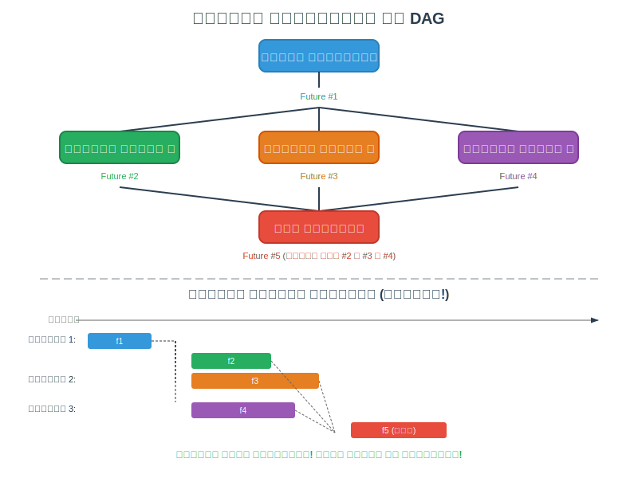
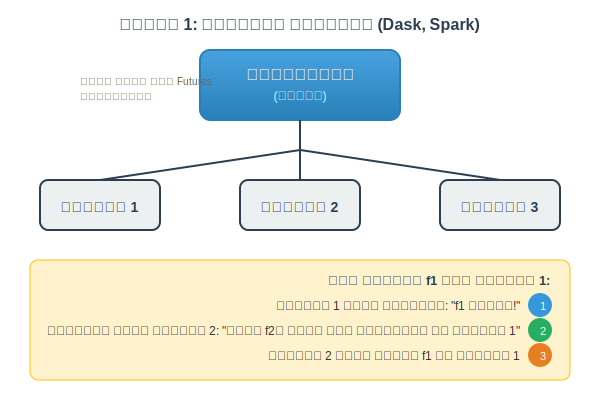
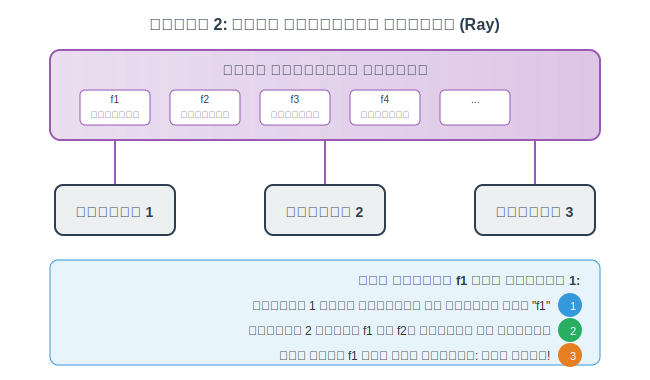
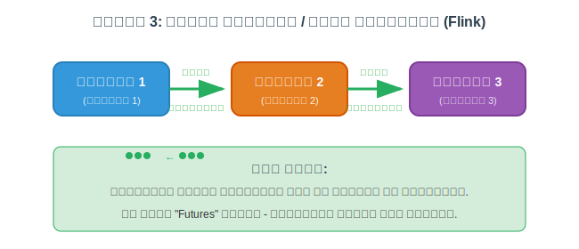
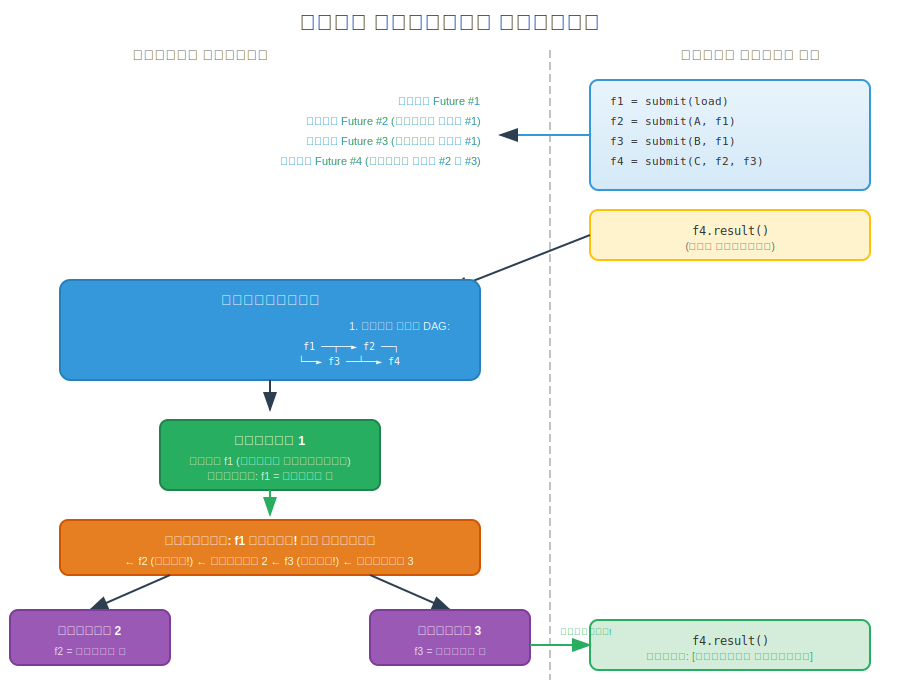

أهداف التعلم
بنهاية هذه الجلسة، سيكون الطلاب قادرين على:
- فهم نمط Future/Promise المستخدم في الحوسبة الموزعة
- شرح الفرق بين التنفيذ المتزامن وغير المتزامن
- تعريف ما هو الـ DAG ولماذا هو مهم
- وصف كيف تتدفق تبعيات المهام عبر النظام الموزع
- مقارنة أنماط تواصل العمال المختلفة
- تطبيق هذه المفاهيم لفهم كيف تعالج أطر الذكاء الاصطناعي البيانات
مقدمة: كيف تتعامل الأدوات الموزعة مع المعالجة المتوازية
عندما تحتاج إلى معالجة كميات هائلة من البيانات - سواء كان تدريب نموذج ذكاء اصطناعي أو تحليل مليارات السجلات - لا يمكنك انتظار اكتمال كل عملية قبل بدء التالية. بدلاً من ذلك، تستخدم الأنظمة الموزعة الحديثة نظام "تذاكر" ذكي يتيح لك إرسال العمل والاستمرار في القيام بأشياء أخرى أثناء معالجة هذا العمل.
1. تشبيه المطعم
تخيل أنك تدخل مقهى أو مطعم مزدحم. هناك طريقتان يمكن أن تعمل بها عملية الطلب:
الطريقة المتزامنة (الحاجزة) — غير فعالة!
أنت: "أريد لاتيه من فضلك"
أنت: *تقف عند المنضدة*
أنت: *تنتظر*
أنت: *تستمر في الانتظار*
أنت: *لا تزال تنتظر... مرت 5 دقائق*
الباريستا: "تفضل اللاتيه!"
أنت: *الآن يمكنك الذهاب والجلوس أو فعل أي شيء آخر*المشكلة: هذا هو التنفيذ المتزامن/الحاجز — تقدم طلباً وتنتظر خاملاً حتى يكتمل. لا يمكنك فعل أي شيء آخر خلال هذا الوقت. غير فعال جداً!
الطريقة غير المتزامنة (غير الحاجزة) — فعالة!
أنت: "أريد لاتيه من فضلك"
الباريستا: "بالتأكيد! تفضل تذكرتك: #42"
أنت: *تأخذ التذكرة، تذهب وتجلس، تقرأ كتاباً، تتحقق من الإيميلات، تتحدث مع صديق*
أنت: *تتحقق من الشاشة أحياناً أو تستمع لرقمك*
الشاشة: "الآن نخدم #42!"
أنت: *تذهب لاستلام اللاتيه*2. فهم الـ Futures/Promises: نظام التذاكر
التعريف: الـ Future (يُسمى أيضاً Promise) هو عنصر نائب لنتيجة ستكون متاحة لاحقاً. إنه مثل تذكرة يمكنك استخدامها لاسترداد نتيجتك عندما تكون جاهزة.
تلك التذكرة (#42) هي بالضبط ما تسميه لغات البرمجة والأدوات الموزعة Future أو Promise:
| المطعم | البرمجة |
|---|---|
| طلبك (لاتيه) | حساب/مهمة |
| المطبخ/الباريستا | العامل/المنفذ |
| التذكرة (#42) | كائن Future/Promise |
| التحقق إذا كان الطلب جاهزاً | التحقق من حالة Future (.done()، .ready()) |
| استلام طلبك | الحصول على النتيجة (.result()، .get()) |
| فشل الطلب (نفد الحليب!) | Future يطلق استثناءً |
لماذا هذا النمط مهم للحوسبة الموزعة
في الأنظمة الموزعة، غالباً ما نحتاج إلى:
- إرسال مهام كثيرة إلى عمال مختلفين (أجهزة/أنوية/GPUs)
- عدم الانتظار لكل مهمة لتنتهي قبل إرسال التالية
- جمع النتائج عندما تكون جاهزة
- التعامل مع الإخفاقات بشكل أنيق
مثال مهمة واحدة
# SYNCHRONOUS (blocking) - inefficient
result = slow_computation(data) # Wait here for 10 minutes...
print(result) # Can only continue after it's done
# ASYNCHRONOUS (non-blocking) - efficient
future = submit(slow_computation, data) # Returns immediately with a "ticket"
# ... do other work while computation runs ...
result = future.result() # Get result when neededمثال مهام متعددة
# Submit 1000 tasks - returns 1000 "tickets" immediately
futures = [submit(process, chunk) for chunk in data_chunks]
# All 1000 tasks are now running in parallel on different workers!
# We didn't wait for task 1 to finish before submitting task 2
# Collect results when ready
results = [f.result() for f in futures]3. كيف تطبق الأدوات المختلفة هذا النمط
تقريباً كل أداة موزعة تستخدم شكلاً من أشكال نمط Future/Promise:
| الأداة | تطبيق Future/Promise |
|---|---|
| Python (مدمج) | concurrent.futures.Future |
| Dask | dask.delayed يُرجع كائنات مؤجلة؛ .compute() يُشغل التنفيذ |
| Ray | دوال @ray.remote تُرجع ObjectRef (future الخاص بـ Ray) |
| Spark | RDDs/DataFrames كسولة؛ التحويلات تُرجع RDDs جديدة؛ الإجراءات تُشغل التنفيذ |
| Parsl | دوال @python_app تُرجع AppFuture |
| Flink | عمليات DataStream كسولة؛ التنفيذ يُشغل بـ env.execute() |
| TensorFlow | (وضع الرسم البياني) العمليات تُرجع مراجع Tensor؛ session.run() ينفذ |
| PyTorch | torch.jit.fork() يُرجع Future للتنفيذ غير المتزامن |
| Airflow/Prefect | المهام تُرجع نتائج تنتظرها المهام التابعة |
4. التقييم الكسول: المطبخ لا يبدأ حتى تطلب
التعريف: التقييم الكسول يعني أن النظام لا يقوم بأي عمل فعلياً حتى تطلب النتائج صراحةً. يبني "خطة" أولاً، ثم ينفذها كلها مرة واحدة.
العديد من الأدوات تستخدم التقييم الكسول — لا تقوم بأي عمل فعلياً حتى تطلب النتائج صراحةً:
# Dask example - NOTHING is computed yet!
df = dd.read_csv("huge_file.csv") # Lazy - just a plan
filtered = df[df['value'] > 100] # Lazy - adds to plan
grouped = filtered.groupby('category') # Lazy - adds to plan
result = grouped.sum() # Lazy - still just a plan!
# NOW it actually executes the entire plan
final = result.compute() # Triggers execution!تشبيه المطعم
إنه مثل إخبار النادل بطلبك الكامل (المقبلات، الطبق الرئيسي، الحلوى)، والمطبخ يبدأ الطبخ فقط عندما تقول "هذا كل شيء، يرجى البدء!"
هذا يسمح للنظام بتحسين الخطة بأكملها قبل التنفيذ — ربما دمج الخطوات، إعادة ترتيب العمليات، أو إزالة العمل غير الضروري.
5. ملخص المصطلحات الأساسية
| المصطلح | المعنى | تشبيه المطعم |
|---|---|---|
| Synchronous (متزامن) | انتظر كل مهمة لتكتمل قبل المتابعة | قف عند المنضدة حتى يجهز الطلب |
| Asynchronous (غير متزامن) | أرسل المهمة، احصل على تذكرة، تابع عملاً آخر | احصل على تذكرة، اذهب واجلس |
| Future/Promise | عنصر نائب لنتيجة ستكون متاحة لاحقاً | تذكرتك #42 |
| Blocking (حاجز) | عملية توقف التنفيذ حتى تكتمل | الانتظار عند المنضدة |
| Non-blocking (غير حاجز) | عملية تعود فوراً | الحصول على التذكرة والمشي بعيداً |
| Lazy Evaluation (التقييم الكسول) | بناء خطة عمل، التنفيذ لاحقاً | أعطِ الطلب الكامل، المطبخ يبدأ بأمر |
| Eager Evaluation (التقييم النشط) | التنفيذ فوراً عند الاستدعاء | المطبخ يبدأ كل عنصر عند طلبه |
| Callback | دالة تُستدعى عند اكتمال الـ future | "سننادي اسمك عندما يكون جاهزاً!" |
| await/wait | حجز حتى يكتمل الـ future | اجلس وانتظر رقمك |
| poll/check | تحقق إذا كان الـ future جاهزاً دون حجز | ألقِ نظرة على الشاشة أحياناً |
6. ما هو الـ DAG؟ (الرسم البياني الموجه غير الدوري)
التعريف: الـ DAG (Directed Acyclic Graph - الرسم البياني الموجه غير الدوري) هو طريقة لتمثيل المهام وتبعياتها. يُظهر أي المهام يجب أن تكتمل قبل أن تبدأ أخرى.
- Directed (موجه): الأسهم تُظهر اتجاه تدفق البيانات (A ← B يعني مخرجات A تذهب إلى B)
- Acyclic (غير دوري): لا حلقات/دورات (لا يمكن أن يعتمد A على B و B يعتمد على A)
- Graph (رسم بياني): عقد (مهام) متصلة بحواف (تبعيات)
سلسلة الوعود: وجبة متعددة الأطباق
تخيل سيناريو مطعم أكثر تعقيداً — أنت تطلب وجبة متعددة الأطباق حيث كل طبق يعتمد على السابق:
7. تبعيات المهام: كيف تتدفق الـ Futures عبر الـ DAG
في معالجة البيانات الواقعية، نادراً ما تعمل المهام منعزلة. مخرجات مهمة واحدة تصبح مدخلات أخرى. هذا يُنشئ تبعيات.
التبعيات في الكود
# Task B depends on Task A's result
# Task C depends on Task B's result
future_A = submit(task_A, raw_data) # Returns immediately with ticket A
future_B = submit(task_B, future_A) # Takes ticket A as input!
future_C = submit(task_C, future_B) # Takes ticket B as input!
# The system knows:
# - task_A can start immediately
# - task_B must WAIT for future_A to be ready
# - task_C must WAIT for future_B to be ready
final_result = future_C.result() # Blocks until entire chain completesلاحظ: نمرر الـ future نفسه (التذكرة)، وليس النتيجة! النظام ينتظر التبعيات تلقائياً.
خط أنابيب معالجة البيانات مع تدفق DAG
الفروع المتوازية: حيث تتألق الـ DAGs
القوة الحقيقية تأتي عندما يمكن للمهام أن تعمل بالتوازي لأنها لا تعتمد على بعضها:
بناء DAG مع التبعيات (مثال كود)
# Using Dask as example (similar pattern in Ray, Parsl, Spark)
from dask import delayed
@delayed
def load(filename):
return read_file(filename)
@delayed
def process_a(data):
return data.filter(...)
@delayed
def process_b(data):
return data.transform(...)
@delayed
def process_c(data):
return data.aggregate(...)
@delayed
def merge(a, b, c):
return combine(a, b, c)
# Build the DAG (no execution yet!)
data = load("input.csv") # Future #1
branch_a = process_a(data) # Future #2, depends on #1
branch_b = process_b(data) # Future #3, depends on #1
branch_c = process_c(data) # Future #4, depends on #1
final = merge(branch_a, branch_b, branch_c) # Future #5, depends on #2,#3,#4
# Visualize the DAG (Dask feature)
final.visualize() # Shows the graph!
# Execute the DAG
result = final.compute() # NOW all tasks run, respecting dependencies8. أنماط تواصل العمال
عندما يكتمل future، كيف تحصل المهمة التالية على النتيجة؟ الأدوات المختلفة تستخدم مناهج مختلفة:
النمط 1: المجدول المركزي (Dask, Spark)
النمط 2: مخزن الكائنات الموزع (Ray)
النمط 3: تمرير الرسائل / تدفق البيانات (Flink)
الصورة الكاملة: من الإرسال إلى النتيجة
9. أمثلة كود سريعة حسب الأداة
Dask
import dask
@dask.delayed # Makes function lazy
def process(x):
return x * 2
futures = [process(i) for i in range(100)] # 100 delayed objects (tickets)
results = dask.compute(*futures) # Execute all in parallelRay
import ray
@ray.remote # Makes function distributed
def process(x):
return x * 2
futures = [process.remote(i) for i in range(100)] # 100 ObjectRefs (tickets)
results = ray.get(futures) # Collect resultsParsl
from parsl import python_app
@python_app # Makes function parallel
def process(x):
return x * 2
futures = [process(i) for i in range(100)] # 100 AppFutures (tickets)
results = [f.result() for f in futures] # Collect resultsSpark (التحويلات الكسولة)
rdd = sc.parallelize(range(100)) # Distributed collection
mapped = rdd.map(lambda x: x * 2) # Lazy transformation (plan)
result = mapped.collect() # Action triggers executionالأدوات وتطبيقاتها للـ DAG
| الأداة | بناء DAG | التصور | محفز التنفيذ |
|---|---|---|---|
| Dask | @delayed decorator |
.visualize() |
.compute() |
| Ray | @ray.remote decorator |
Ray Dashboard | ray.get() |
| Spark | تحويلات على RDD/DF | Spark UI (تبويب DAG) | إجراءات (collect, save) |
| Parsl | @python_app decorator |
مراقبة Parsl | .result() |
| Airflow | تبعيات المهام في ملف DAG | Airflow Web UI | المجدول يُشغل |
| Prefect | @task و @flow decorators |
Prefect UI | .run() أو جدولة |
| Flink | عمليات DataStream | Flink Web UI | env.execute() |
| Beam | سلاسل PTransform | تصور Pipeline | pipeline.run() |
الملخص: النقاط الرئيسية
| المفهوم | الشرح |
|---|---|
| Future/Promise | عنصر نائب (تذكرة) لنتيجة ستكون متاحة لاحقاً |
| DAG | رسم بياني يُظهر المهام (عقد) وتبعياتها (حواف) |
| المهام الجذرية | مهام بدون تبعيات — يمكن أن تبدأ فوراً |
| المهام الورقية | مهام بدون تابعين — المخرجات النهائية |
| حل التبعيات | المجدول يتتبع أي futures تحتاجها كل مهمة |
| الفروع المتوازية | المهام المستقلة تعمل بالتزامن على عمال مختلفين |
| نقاط الدمج/الربط | مهام تنتظر futures متعددة قبل البدء |
| موقعية البيانات | المجدول يحاول تشغيل المهام قريباً من بيانات الإدخال |
| البناء الكسول | DAG يُبنى فوراً؛ التنفيذ يحدث لاحقاً |
الصلة بالذكاء الاصطناعي/تعلم الآلة
هذه الأنماط أساسية لكيفية عمل أنظمة الذكاء الاصطناعي الحديثة:
- تدريب نماذج التعلم العميق يوزع الحساب عبر GPUs باستخدام هذه الأنماط
- خطوط أنابيب معالجة البيانات تستخدم DAGs لتنظيم خطوات التحويل
- هندسة الخصائص غالباً تتضمن حساب متوازي للعديد من الخصائص
- استدلال النموذج على نطاق واسع يستخدم أنماط async للتعامل مع طلبات كثيرة
موارد إضافية
هل تريد التعمق أكثر في أدوات الحوسبة الموزعة المحددة؟ اطلع على مرجعنا التقني الشامل:
يغطي المرجع: نماذج الحوسبة، دعم اللغات، أنماط المعالجة، دعم الأجهزة (GPU/TPU)، القدرات السحابية، أنماط البنية، استراتيجيات تقسيم البيانات، آليات التسامح مع الأخطاء، وأدلة اختيار الأدوات.